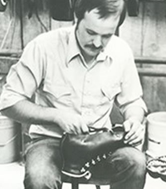

 머렐(merrell)은 Randy Merrell이라는 인물이 험난한 지형으로 유명한 미국 Utha주에서 카우보이용 부츠를 주문 제작, 판매하면서 시작된 브랜드로 100% 수공으로 제작된 부츠는 최고의 편안함과 기능적인 부츠로 뽑힐만큼 퀄리티를 인정 받았고 'No compromise' 원칙하에 제조된 머렐의 초기 생각은 오늘날까지 이어온 신념이다.
13년 연속 아웃도어 신발부문 세계판매 1위를 달성한 글로벌 No.1 브랜드 '머렐'은
2017년 의류라인을 전세계 동시 런칭하며
Total Life Style Brand로 자리매김하였다.